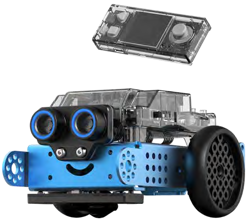

Goal of these two hours: The robot counts something nobody built a block for, and shows the running total on its own screen.
Project nameG7-C-13 New conceptVariable You build A robot that counts the walls it meets. BlocksEventsControlVariablesDisplaymBot2 Chassis
You need — pieces & materials

mBot2, assembled
mBot2 box
Boxes / obstacles
walls for the arena
Classroom
Stopwatch
Classroom
Teach it — the concept
The CyberPi already counts things — button A press counts is right there in the palette. So why build your own? Because it counts what Makeblock chose to count. The moment you want walls met, laps run or points scored, nobody has made you a block. You need a variable: a named box holding a number the robot remembers. set puts a value in, change by adjusts it.
The first counter every class builds is wrong, and it is worth letting it be wrong. The forever loop runs many times a second, so one wall gets counted twenty times. Fixing that — wait until the wall is gone before counting again — is the real lesson, and it is the same bug that will bite them in the capstone.
Quick Start Guide — this session
New box
Variables → Make a Variable
Set
set walls to 0 — once, at the start
Trap
one wall counts 20× without a pause
Floor
an arena about 1.5 m across, walls on all sides
Variable
A variable is a named box the program can put a value in and read back later. It is how a program remembers: without one, the robot starts every moment knowing nothing about the last one. The name matters as much as the box — walls tells the next reader what is inside, x does not.
Watch out
Set the variable to 0 once, before the forever loop. Inside it, the count resets every pass and never gets above 1 — the second-most-common bug today.
The wait-until fix is better than a plain wait, because it works at any speed. Let teams try a fixed wait first and find the case where it fails.
A count with no label on screen is unreadable in a week. Insist on join from the start.
Lesson flow — minute by minute
15′Put button A press counts on the screen and press the button. It counts perfectly. Now try to count walls — go and look for the block. There isn't one.
✓The button counter works perfectly — and a class that has searched the palette for a wall counter and found there isn’t one.
25′Make a variable, set it to 0, change it by 1 when the robot meets a wall. Run it. Watch it leap by twenty and work out why.
newAdds to what is already in the box — which means it reads the old value first, so something must have set it.
✓A counter that leaps by twenty at one wall, and a team that can say why before being told.
20′Fix it: count once per wall, not once per loop. Wait until the wall is out of range before you are allowed to count again.
newHolds the script here until the condition becomes true. The robot keeps doing whatever it was already doing.
✓One wall, one count. Drive past five walls and the screen says 5.
20′Show the count with join so it reads "walls: 4", and celebrate when it reaches five.
✓The screen reads “walls: 4”, not “4”, and the robot celebrates when it reaches five.
20′Arena run: how many walls in sixty seconds? Compare across the class — same code, different totals, argue about why.
✓A wall count for sixty seconds, compared across the class — same code, different totals, and an argument about why.
10′Log the bug you hit and the fix. It comes back in Step 24.
✓The bug and its fix written in the log. It comes back in Step 24.
◉ Expected result at the end of this session
ABUTTON
It drives, turns at each wall, and the number goes up by one.
👁WATCH FOR
One wall, one count — even if it sits there for a while.
Teacher check
The counter goes up once per wall, not once per loop
The total is on screen and labelled
The team can say why button press counts was not enough
newwait until — Holds the script here until the condition becomes true. The robot keeps doing whatever it was already doing. · change my variable by — Adds to what is already in the box — which means it reads the old value first, so something must have set it.